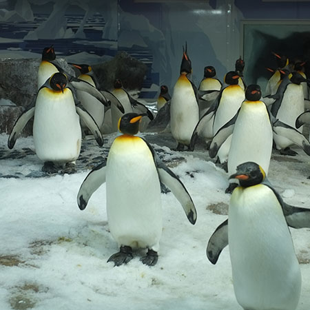
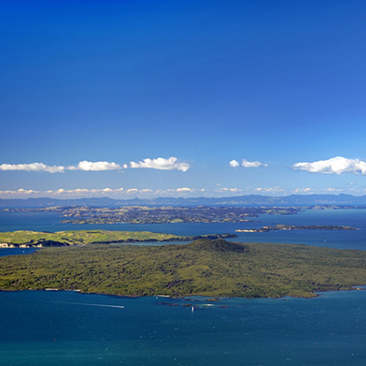
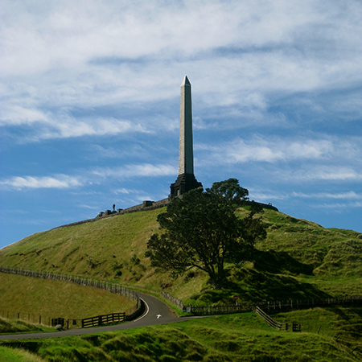
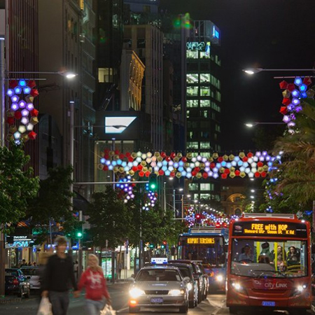
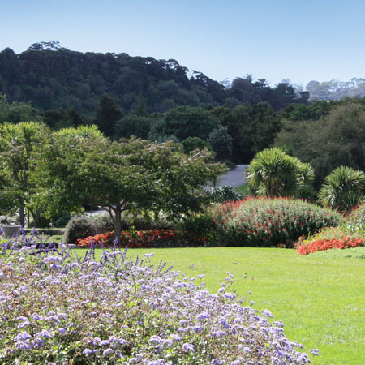
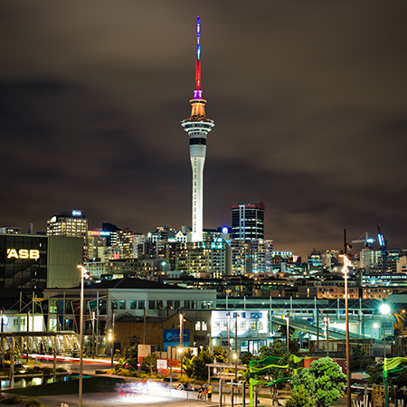
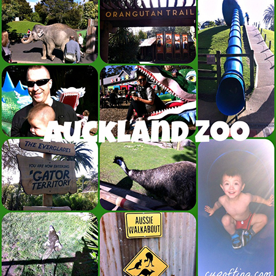

Auckland has a huge range of attractions, from the tallest building in the Southern Hemisphere to up-close encounters with penguins and sharks. Ride the roller coasters, soak in the thermal hot pools, join a food and wine tour or find Auckland's most scenic spots. Here's a list of Auckland's top 10 attractions:
-
1. Kelly Tarltons
 Kelly Tarlton's Sea Life Aquarium is a public aquarium in Auckland, New Zealand that was opened in 1985. It was the brainchild of New Zealand marine archeologist and diver Kelly Tarlton
-
2. Auckland Domain

The Auckland Domain is Auckland's oldest park, and at 75 hectares one of the largest in the city. Located in the central suburb of Grafton, the park contains all of the explosion crater and most of the surrounding tuff ring of the Pukekawa volcano.
-
3. Auckland Museum
The Auckland War Memorial Museum is one of New Zealand's most important museums and war memorials. Its collections concentrate on New Zealand history, natural history, as well as military history.
-
4. Rangitoto Island
 Rangitoto Island is a volcanic island in the Hauraki Gulf near Auckland, New Zealand. The 5.5 km wide island is an iconic and widely visible landmark of Auckland with its distinctive symmetrical shield volcano cone rising 260 metres (850 ft) high over the Hauraki Gulf. Rangitoto is the most recent and the largest (2311 hectares) of the approximately 50 volcanoes of the Auckland volcanic field.
-
5. One Tree Hill
 Maungakiekie / One Tree Hill is a 182-metre volcanic peak in Auckland, New Zealand. It is an important memorial place for both Māori and other New Zealanders
-
6. Queen Street
 Queen Street is the major commercial thoroughfare in the Auckland CBD, Auckland, New Zealand's main population centre. It starts at Queens Wharf on the Auckland waterfront, adjacent to the Britomart Transport Centre and the Downtown Ferry Terminal, and runs uphill for almost three kilometres in a mostly straight south-southwesterly direction towards the Karangahape Road ridge, and the residential suburbs in the interior of the Auckland isthmus.
-
7. Botanic Gardens
 Auckland Botanic Gardens opened to visitors in February 1982. It is a young garden by both national and international standards, but has received many awards and much recognition over the past 25 years; and it's high visitor numbers reflect its quality and popularity
-
8. Sky Tower
 The Sky Tower is an observation and telecommunications tower located on the corner of Victoria and Federal Streets in the Auckland CBD, Auckland City, New Zealand
-
9. Waiheke Island

Waiheke Island is in the Hauraki Gulf of New Zealand, about 17.7 km from Auckland. It is the second-largest island in the gulf, after Great Barrier Island
-
10. Auckland Zoo
 Auckland Zoo is a 16.35-hectare zoological garden in Auckland, New Zealand, situated next to Western Springs park not far from Auckland's central business district.